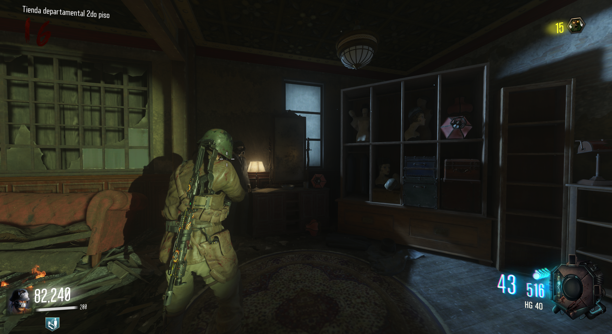
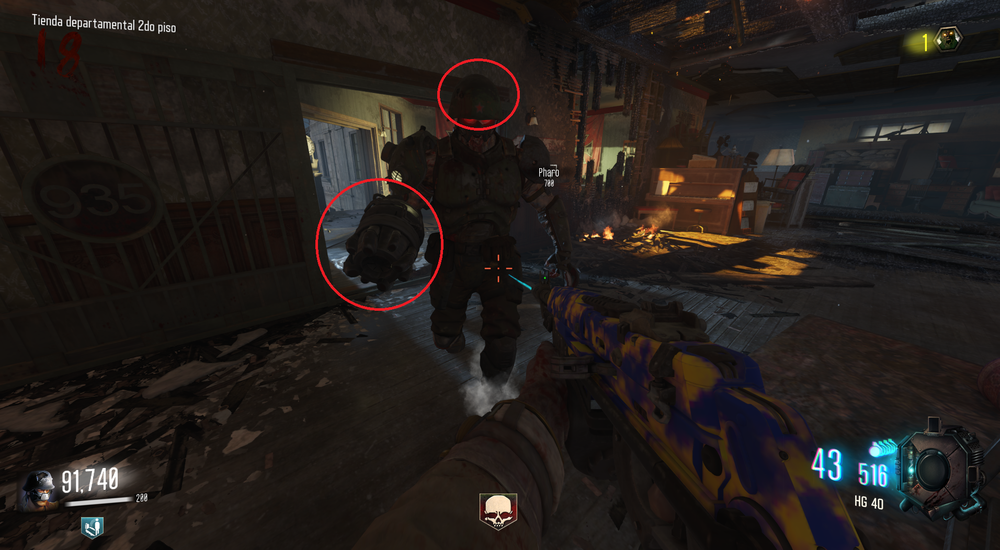
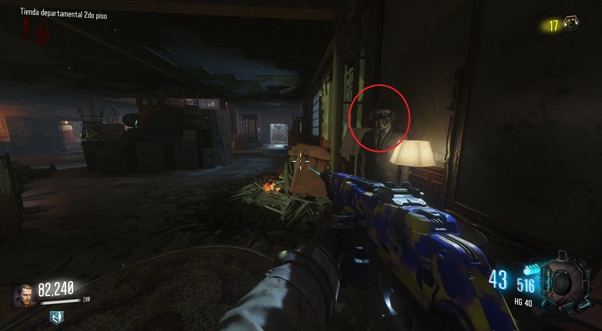

Casco de Mangler (Gorod Krovi)

Propiedades del casco:
50% menos de daño recibido de los Manglers.
30% más de daño al atacar Manglers.
Cómo obternerlo:
1. Destrozar 5 brazos de Manglers.
2. Destrozar 5 cascos de Manglers.

Después iremos a la segunda planta de Department Store y uno de los maniquíes llevará el casco.
